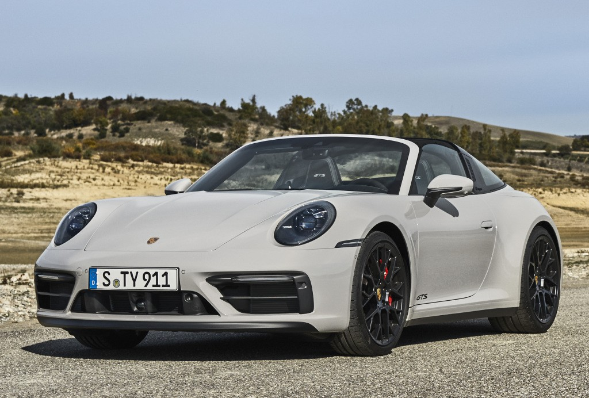
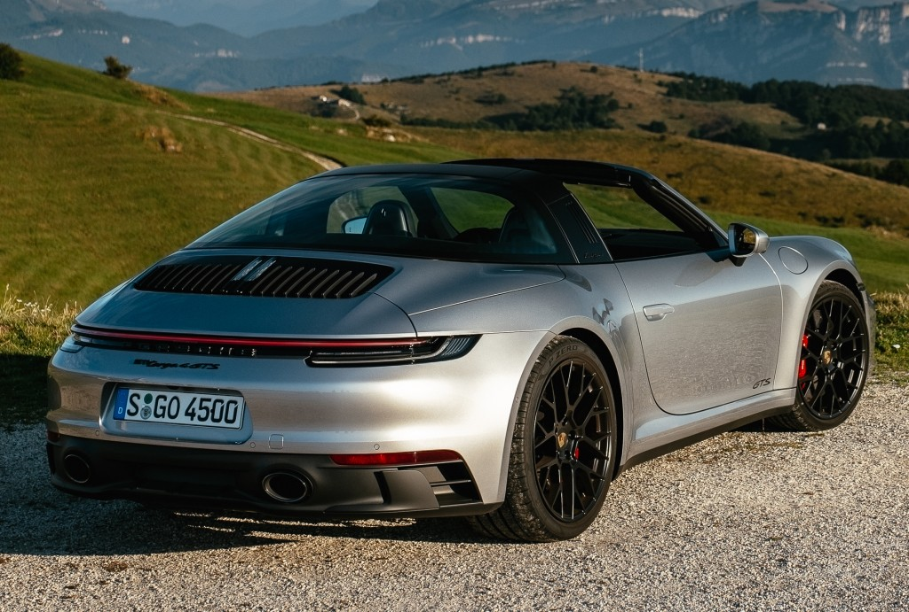

Двигателят на моделите 911 е с двойна турбина. Неговите открояващи се качества: изключителна мощност в целия скоростен диапазон, изключително директна реакция и широко плато на въртящия момент, дори при ниски скорости. Хоризонтално противоположната конструкция с къса дължина, ниска височина и позиция в задната част на автомобила позволява нисък център на тежестта. Стойките на двигателя близо до центъра на автомобила осигуряват по-голяма стабилност и по-малко вибрации.
 